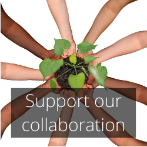

Support the Metabolism of Cities Living Lab
The Metabolism of Cities Living Lab (MOC-LLAB) is a community, spanning over countries worldwide, sourcing innovative approaches to addressing one of the world’s largest challenges: climate change and inequality. To date, this work has surfaced both nationally and internationally tackling different aspects of the climate issue with collaborators from France, Italy, Ukraine, Mexico, and USA.
Housed at the Center for Human Dynamics in the Mobile Age (HDMA), the MOC-LLAB is developing cutting-edge methodologies for how online tools and crowds can help tackle a problem of this magnitude. By constructively engaging a broad range of scientists, policy makers, business people, investors, and concerned citizens, for and participation in developing global climate change solutions and plans that would have been possible otherwise.
Your gift to the Metabolism of Cities Living Lab can help support this.Our work has been featured at the SDSU’s Student Research Symposium 2021 at San Diego State University (San Diego, California), United Nations Environmental Program Marine Litter and Microplastic Working Group, A Youth Dialogue on Environmental Impact of Covid-19, Youth Environmental Assembly 2021, Youth for Water and Environment (Nairobi, Kenya), Fighting Covid-19 with Big Data: Track IT. International. Screening Survey Tool, HubZine 2020 (Milan, Italy), Metabolism of Cities Living Lab, Climate Social Forum: Connecting the world in social environmental and climate crises 2020, HubZine Italia, (Milan, Italy), Climate Change Symposium 2020, COP 25, Politecnico di Milano (Milan, Italy), The Climate Reality Project, 24 Hours of Reality: Countdown to the Future 2020 #OneHealth for All, Technologies and Data at service of OneHalth for All (Milan, Italy), HubZine Italia, Covid-19 Innovation for Re-Action 2020 (Milan, Italy), Technical University of Munich, Empower Africa (Munich, Germany), The Outbreak of Covid-19 in Italy: Fighting the Pandemic, Department of Geography (Geo 590), San Diego State University (San Diego, California, USA), United Nations Environmental Program, Major Group for Children and Youth, Marine Litter and Microplastic Working Group, Youth Capacity Building Webinar 2020 (Nairobi, Kenya), Climate Social Forum, City Infrastructures and Local Actions (Milan, Italy), International Conference on Sustainable Development 2020 (ICSD), Columbia University (New York, USA), The 14th Environmental Conference for Doctoral Students 2020, Tsinghua University (Beijing, China).
The MOC-LLab is an international research collaboration at SDSU, Department of Geography, Center for Human Dynamics in the Mobile Age. SDSU is a 501(c)3 institution, and your gift is tax-deductible within the limitations of U.S. federal income tax laws. The Institute’s C-fund account is handled by the SDSU Research Foundation the Fund Code is C04274.

Support us
Gifts to support the Metabolism of Cities Living Lab, that harness the collective intelligence of people from all around the world to develop and analyze creative new ideas to address climate change in southern California and the Baja California Mexico region. Contributions support the ongoing maintenance and expansion of the platform and Lab, the development of innovative collective intelligence tools, as well as a public annual conference that recognizes the best ideas and helps put them into action.